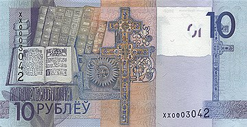
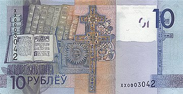

Краткая информация
Годы выпуска:
Введена в обращение:
1 июля 2016 года
Размер банкноты:
139 x 72 мм
Банкнота посвящена Витебской области. Соответствие области номиналу банкноты было определено по русскому алфавиту
С 20 мая 2019 года года Нацбанк республики ввёл в обращение модернизированную версию 10-рублёвой банкноты образца 2009 года.
Отличия
Описание
На лицевой стороне изображена Спасо-Преображенская церковь в Полоцке и стилизованное изображение православного храма и архитектурных элементов на фоне, на оборотной — коллаж, посвящённый теме
просветительства икнигопечатания. Слева от основного изображения на незапечатанном поле расположенполутоновый водяной знак, повторяющий фрагмент основного изображения лицевой стороны банкноты. По центру сверху вниз проходит металлизированная защитная нить. Для слабовидящих в левом нижнем углу находится геометрическая фигура имеет увеличенную толщину красочного слоя. Фрагменты изображения номинала вверху слева на лицевой и вверху справа на оборотной сторонах банкнот совмещаются на просвет, образуя цельное изображение номинала банкнот.
Ещё банкноты из этой серии


 
